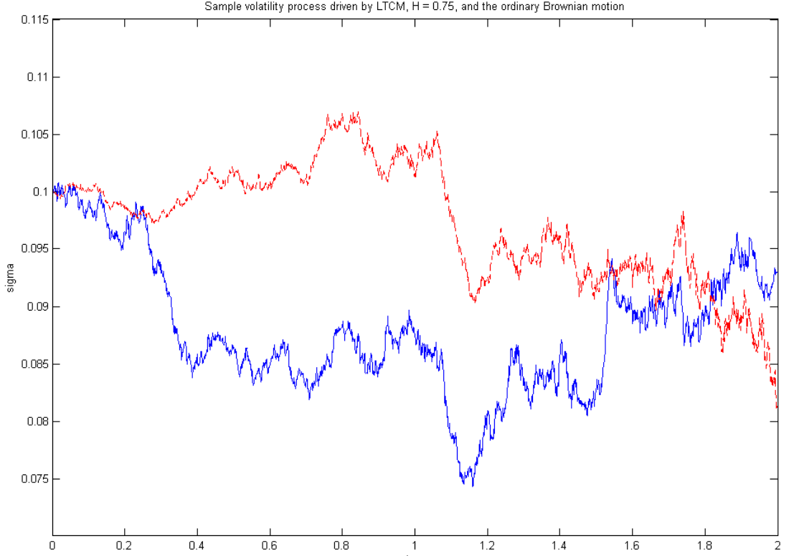
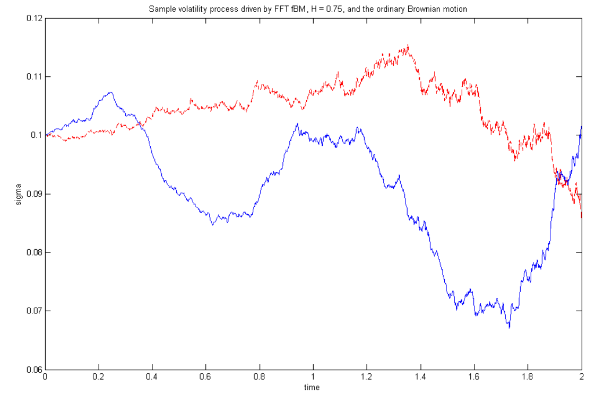

Kijima & Tam (2013)
2025-10-27
The Problem: Traditional stochastic volatility models can’t capture volatility persistence
Implied volatility smile decays too quickly (geometric decay)
Market data shows much slower decay (hyperbolic) - called long-range dependence
Need a process that retains Gaussian structure but exhibits memory
The Solution: Use Fractional Brownian Motion (fBM) with Hurst exponent \(H\)
Extends ordinary Brownian motion to capture long memory
When \(H > 0.5\): persistent (trending) behavior
When \(H < 0.5\): mean-reverting behavior (anti-persistent, “rougher” than BM)
Start with a simple symmetric random walk:
\[S_n = \sum_{i=1}^{n} X_i, \quad X_i \sim \begin{cases} 1 & \frac{1}{2}\\ -1 & \frac{1}{2}\end{cases}\\ B(t) = \frac{1}{\sqrt{N}} S_{[Nt]}\]
As \(N \to \infty\), by Central Limit Theorem: \(B(t) \xrightarrow{d} \text{Standard Brownian Motion}\), i.e. Brownian motion is the scaling limit of a simple random walk.
\[S_n^H = \sum_{i=1}^{n} X_i^H\]
where \(X_i^H\) are dependent, not independent
Autocorrelation structure: \[ \gamma_H(k) = \mathbb{E}[X_1^H \cdot X_{1+k}^H] = \frac{1}{2}[(k+1)^{2H} + (k-1)^{2H} - 2k^{2H}]\\ B^H(t) = \frac{1}{N^H} S_{[Nt]}^H \]
As \(N \to \infty\): \(B^H(t) \xrightarrow{d} \text{Fractional Brownian Motion with Hurst exponent } H\)
Key difference: - \(H = 0.5\): Standard BM (no correlation) - \(H > 0.5\): Persistent - positive correlation in increments - \(H < 0.5\): Mean-reverting - negative correlation in increments
A Fractional Brownian Motion \(B_H(t)\) with Hurst exponent \(H \in (0,1)\) is a continuous, centered Gaussian process with covariance:
\[\mathbb{E}[B_H(t) B_H(s)] = \frac{1}{2}(t^{2H} + s^{2H} - |t-s|^{2H})\]
Covariance of increments: \[\text{Cov}(X_i, X_j) = \gamma_H(|i-j|) \sim H(2H-1)|i-j|^{2H-2} \text{ as } |i-j| \to \infty\]
Key Properties:
Self-similarity: \(B_H(\lambda t) \xrightarrow{d} \lambda^H B_H(t)\)
Stationary increments: \(B_H(t+s) - B_H(s) \xrightarrow{d} B_H(t)\)
Gaussian structure: Maintains tractability
Variance scaling: \(\text{Var}(B_H(t)) = t^{2H}\)
Long-range dependence (only when \(H > 0.5\))
Idea: sequentially sample \(Z_{n+1}\) given \(Z_{0:n}\). Build fBM by summation.
Autocovariance \(\gamma(k)\), Toeplitz block \[ \Gamma^{(n)}=\{\gamma(i-j)\}_{i,j=0}^{n},\quad \Gamma^{(n+1)}=\begin{pmatrix}1 & c^{(n)\!\top}\\ c^{(n)} & \Gamma^{(n)}\end{pmatrix}, \quad c^{(n)}_k=\gamma(k+1). \]
Conditional Gaussian: \[ \mu_{n+1}=\mathbb E[Z_{n+1}\!\mid\! Z_{0:n}]=c^{(n)\!\top}(\Gamma^{(n)})^{-1} Z_{0:n}, \qquad \sigma_{n+1}^2=\mathrm{Var}(Z_{n+1}\!\mid\! Z_{0:n})=1-c^{(n)\!\top}(\Gamma^{(n)})^{-1}c^{(n)}. \]
Dieker/Hosking recursions: \[ d^{(n)}=(\Gamma^{(n)})^{-1}c^{(n)},\quad \Gamma^{(n+1)^{-1}}=\frac{1}{\sigma_n^2} \begin{pmatrix} \sigma_n^2\Gamma^{(n)^{-1}}+F^{(n)}d^{(n)}d^{(n)\!\top}F^{(n)} & -F^{(n)}d^{(n)}\\[2pt] -d^{(n)\!\top}F^{(n)} & 1 \end{pmatrix}, \] with \[ \sigma_{n+1}^2=\sigma_n^2-\frac{\big(\gamma(n+1)-\tau_{n}\big)^2}{\sigma_n^2},\quad \tau_n=d^{(n)\!\top}F^{(n)}c^{(n)},\quad \phi_n=\frac{\gamma(n+2)-\tau_n}{\sigma_n^2},\quad d^{(n+1)}=\begin{pmatrix} d^{(n)}-\phi_n F^{(n)}d^{(n)} \\ \phi_n \end{pmatrix}. \]
Intuition: condition on the past. Update inverse covariance cheaply instead of reinverting.
Cost: \(O(N^2)\) time
Input: Desired sample size \(N\), Hurst exponent \(H\)
Setup:
Compute autocovariance: \(\gamma(k) = \frac{1}{2}[(k+1)^{2H} + (k-1)^{2H} - 2k^{2H}]\)
Build covariance matrix: \(\Gamma^{(n)} = \{\gamma(|i-j|)\}_{i,j=0}^{n}\)
Recursion (for \(n = 0, 1, \ldots, N-1\)):
Compute conditional mean: \(\mu_{n+1} = \mathbf{c}^{(n)'} (\Gamma^{(n)})^{-1} \mathbf{Z}_{1:n}\)
Compute conditional variance: \(\sigma_{n+1}^2 = 1 - \mathbf{c}^{(n)'} (\Gamma^{(n)})^{-1} \mathbf{c}^{(n)}\)
Sample: \(Z_{n+1} \sim N(\mu_{n+1}, \sigma_{n+1}^2)\)
Accumulate: \(B_H(n+1) = \sum_{i=1}^{n+1} Z_i\)
Recursively compute inverse without full recalculation: improves constant factor but still \(O(N^2)\)
Conclusion: Best for small to moderate sample sizes (\(N < 5000\))
Idea: Use matrix decomposition \(\Gamma = LL'\) where \(L\) is lower triangular
Sample generation: \(\mathbf{Z} = L \mathbf{V}\) where \(\mathbf{V} \sim N(0, I)\)
Covariance structure preserved: \(\text{Cov}(\mathbf{Z}) = L L' = \Gamma\)
Input: Desired sample size \(N\), Hurst exponent \(H\)
Setup: - Build covariance matrix: \(\Gamma^{(N)}\) with entries \(\Gamma_{i,j} = \gamma(|i-j|)\)
Decomposition:
Compute Cholesky decomposition: \(\Gamma^{(N)} = L L'\)
Generate \(\mathbf{V} \sim N(0, I_N)\) (i.i.d. standard normals)
Multiply: \(\mathbf{Z} = L\mathbf{V}\)
Accumulate: \(B_H(t) = \sum_{i=1}^t Z_i\)
Entry formulas for \(L\): \[L_{i,i}^2 = \gamma(0) - \sum_{k=0}^{i-1} L_{i,k}^2\] \[L_{i,j} = \frac{1}{L_{j,j}}\left(\gamma(i-j) - \sum_{k=0}^{j-1} L_{i,k} L_{j,k}\right)\]
Exact method: complete covariance structure
Easy to understand and implement
Time complexity: \(O(N^3)\)
Any circulant matrix can be decomposed as: \[C = QAQ^T\]
where the Fourier matrix \(Q\) has entries:
\[(Q)_{j,k} = \frac{1}{\sqrt{2N}} \exp\left(2\pi i \frac{jk}{2N}\right) \quad \text{for } j, k = 0, \ldots, 2N-1 \quad \quad (25)\]
The matrix \(\Lambda\) is the diagonal matrix with eigenvalues:
\[\lambda_k = \sum_{j=0}^{2N-1} c_{0,j} \exp\left(2\pi i \frac{jk}{2N}\right) \quad \text{for } j, k = 0, \ldots, 2N-1 \quad \quad (26)\]
Algorithm: The simulation of the sample path of fGn using the FFT method consists of the following steps:
Compute eigenvalues \(\{\lambda_k\}_{k=0,\ldots,2N-1}\) from the circulant covariance matrix by means of FFT. This will reduce the computational time from \(O(N^3)\) to \(O(N \log N)\).
Calculate \(Q = Q^T\) (or \(Q = \sqrt{\Lambda}\) where \(\Lambda\) is diagonal with eigenvalues)
Generate two standard normal random variables: \(W_0 = V_0^{(1)}\) and \(W_N = V_N^{(1)}\)
For \(1 \leq j < N\), generate two standard normal random variables \(V_j^{(1)}\) and \(V_j^{(2)}\) and let: \[W_j = \frac{1}{\sqrt{2}}\left(V_j^{(1)} + i V_j^{(2)}\right)\] \[W_{2N-j} = \frac{1}{\sqrt{2}}\left(V_j^{(1)} - i V_j^{(2)}\right)\]
Compute \(Z = QA^{1/2}W\). This can be seen as another Fourier transform of the vector \(A^{1/2}W\): \[Z_j = \frac{1}{\sqrt{2N}} \sum_{k=0}^{2N-1} \sqrt{\lambda_k} W_k \exp\left(-2\pi i \frac{jk}{2N}\right)\]
It is identical to carry out FFT on the following sequence: \[w_j = \begin{cases} \sqrt{\lambda_0^{(1)}} \cdot 0 \\ \sqrt{\frac{\lambda_j^{(1)} + i\lambda_j^{(2)}}{2}} (V_j^{(1)} + i V_j^{(2)}) & j = 1, \ldots, N-1 \\ \sqrt{\frac{\lambda_N^{(1)}}{2N}} & j = N \\ \sqrt{\frac{\lambda_j^{(1)} - i\lambda_j^{(2)}}{2}} (V_{2N-j}^{(1)} - i V_{2N-j}^{(2)}) & j = N+1, \ldots, 2N-1 \end{cases}\]
Due to the symmetric nature of the sequence, the Fourier sum of \(\{w_j\}_{j=0}^{2N-1}\) is real. The first \(N\) samples have the desired covariance structure. Since the second half of samples \((N, \ldots, 2N-1)\) are not independent of the first \(N\) samples, this sample cannot be used.
\[B_H(t) = \sum_{i =1}^t Z_i\]$$
Exploits circulant structure via FFT (divide-and-conquer)
Diagonal matrix multiplication is \(O(M)\)
FFT itself is \(O(M \log M)\)
Embedding creates artificial circulant structure
Original covariance not perfectly preserved at boundaries
Must check all eigenvalues \(\hat{\Lambda}_k > 0\) for stability
Fix: Increase \(M\) (use larger \(M = 4N\) or more) to fix negative eigenvalues
Time: \(O(N \log N)\) instead of \(O(N^2)\) or \(O(N^3)\)
Fast for large \(N\) (practical for \(N > 10,000\))
Conclusion: Trade-off: slight covariance distortion, but gain massive speed
Recall: fBM is limit of scaled correlated random walk: \[B^H(t) = N^{-H} \sum_{i=1}^{[Nt]} \epsilon_i^H\]
Idea: Use finite aggregation with controlled error
Generate correlated increments directly using central limit theorem
Input: Sample size \(N\), Hurst exponent \(H\), error tolerance \(\epsilon_{tol}\)
Step 1: Determine aggregation level - Compute \(M(N)\) from error bound: \(\epsilon \leq 0.65 D_H N^{1-H} / kM\) - Choose \(k \leq 1\) and solve for \(M\)
Step 2: Generate \(M\) correlated sequences For each trajectory \(j = 1, \ldots, M\): - Sample \(U_k \sim \text{Uniform}(0,1)\) (i.i.d.) - Compute weight: \(\mu_k^{(H)} = (1 - U_k)^{1/(2-2H)}\)
Step 3: Build correlated random walk For each time \(t_i\): - Generate correlated sequence: \(\epsilon_i = (-1)^{\text{Bernoulli}} \times \mu_i\) - Accumulate: \(X_t = \sum_{i=1}^t \epsilon_i\)
Step 4: Scale and accumulate \[B_H(t) \approx c_H' \frac{\sum_{j=1}^M X_j^{(\mu_j)}}{M}\]
Explicit error bound from Berry-Esseen inequality: for sum of i.i.d. variables \(S_n\),
\[
\sup_x \left|P\left(\frac{S_n - \mathbb{E}S_n}{\sqrt{\mathrm{Var}\,S_n}} \leq x\right) - \Phi(x)\right| \leq \frac{C \cdot \mathbb{E}|X_i|^3}{\left(\mathrm{Var}\,X_i\right)^{3/2} \sqrt{n}}
\] where \(C\) is a constant (\(\leq 0.4748\)), and \(\Phi(x)\) is the standard normal cdf.
Simple to implement: no matrix operations needed
Covariance not fully captured at each level
Slow for large \(N\)
Requires choosing parameters \((M, k)\) based on tolerance
Best for: Theoretical understanding, small-to-moderate \(N\), when error control matters
Hybrid approach: Exact locally, but with bounded conditioning
Idea: Instead of conditioning on all past values, condition on only \(m\) left + \(n\) right neighbors
Intuition: Far-away values have little influence, exploit locality
Input: Sample size \(N\), Hurst exponent \(H\), parameters \(m, n\) (neighborhood sizes)
Bisection scheme (recursive):
Start with \(Z(0) = 0, Z(1) \sim N(0, 1)\)
At level \(i\), compute midpoints in \(2^i\) intervals
For position \(X_{i, 2k+1}\) (odd-indexed in interval \(2k\)):
\[X_{i,2k+1} = \mu(i,k) + \sigma(i,k) U_{i,k}\]
where:
\(\mu(i,k)\) = conditional mean on neighboring values
\(\sigma^2(i,k)\) = conditional variance
Neighbors: max(\(2k-m+1, 1\)) to \(2k\) (left) and \(k+1\) to min(\(k+n, 2^{i-1}\)) (right)
Matrix inversion for conditional distribution: \[\mu(i,k) = \Gamma_{12} \Gamma_{22}^{-1} \mathbf{X}_{\text{neighbors}}\\ \sigma^2(i,k) = \Gamma_{11} - \Gamma_{12} \Gamma_{22}^{-1} \Gamma_{21}\]
\(O(m+n)\) matrix inversion per step, not \(O(N)\)
Can generate indefinitely without fixed horizon
Truncates far dependencies
When \(m, n\) are small: ignores some correlations
Need to tune \((m, n)\) based on \(H\)
Loss of long-range dependence near boundaries
On-the-fly version adds complexity
Algorithm has to manage “enlargement” (doubling time horizon)
Order of generation matters (bisection vs on-the-fly)
Harder to implement than FFT
Streaming: Generate one path point at a time (on-the-fly variant)
Accuracy: Near-exact when \(m, n\) are large enough
Adaptive: Can adjust parameters based on tolerance
Best for: Streaming applications, when horizon is unknown
Comparison: On-the-fly RMD vs FFT offer similar speed (\(O(N)\) vs \(O(N\log N)\)), but RMD more flexible
Idea: Transform to frequency domain using spectral density of fGn
Spectral density of fractional Gaussian noise: \[f(\lambda) = 2\sin(\pi H)\Gamma(2H+1)(1-\cos\lambda)|\lambda|^{-2H-1} + B(\lambda, H)\]
where \(B(\lambda, H)\) corrects for periodicity effects (complex expression)
Input: Sample size \(N\), Hurst exponent \(H\)
Step 1: Approximate spectral density - Compute \(f(\lambda_k)\) for frequencies \(\lambda_k = \pi k / l\), \(k = 0, \ldots, l\) - Use Paxson’s robust approximation for \(B(\lambda, H)\)
Step 2: Frequency-domain sampling Generate coefficients: \[a_k = \begin{cases} 0 & k=0 \\ R_k \sqrt{f(t_k)} \exp(i\Phi_k) & k=1, \ldots, N/2-1 \\ U_{N/2}\sqrt{f(t_{N/2})} & k=N/2 \\ a_k^* & k=N/2+1, \ldots, N-1 \end{cases}\]
where \(R_k \sim \text{Exp}(1)\), \(\Phi_k \sim \text{Uniform}(0, 2\pi)\) (independent)
Step 3: Inverse FFT \[\mathbf{Z} = \text{IFFT}(\mathbf{a})\]
\[B_H(t) = \sum Z_i\]
Spectral representation theorem: fGn can be reconstructed from spectral density
\(O(N\log N)\)
Approximates covariance structure well
Exact form of \(B(\lambda, H)\) unknown
For \(|\lambda| > 0\), \[B(\lambda, H) \approx -2 \sin(\pi H)\Gamma(2H+1)\left(\frac{1-\cos \lambda}{|\lambda|^{2H+1}}\right)\]
For computational purposes, set \(f(\lambda) \approx 2\sin(\pi H)\Gamma(2H+1)(1-\cos\lambda)|\lambda|^{-2H-1}\)
Only one FFT needed (vs two for Davies-Harte)
Empirically validated for wide range of \(H\)
Best for: Large-scale simulations where speed is critical
| Method | Type | Time | Accuracy | Flexibility | Best For |
|---|---|---|---|---|---|
| Hosking | Exact | \(O(N^2)\) | Exact | Fixed horizon | \(N < 5K\), when exact needed |
| Cholesky | Exact | \(O(N^3)\) | Exact | Fixed horizon | \(N < 1K\), small samples |
| FFT (CEM) | Near-exact | \(O(N\log N)\) | Near-exact | Fixed horizon | \(N > 5K\), standard choice |
| Corr. RW | Approx | \(O(N^{2-2H})\) | Controlled error | On-the-fly | Theory, error control |
| RMD | Near-exact | \(O(N)\) | Bounded error | Streaming | Unknown horizon |
| Spectral | Approx | \(O(N\log N)\) | Good approx | Fixed horizon | Largest \(N\), speed critical |
fBM finds natural applications in stochastic volatility modeling, where long-memory properties capture realistic market behavior:
Consider the truncated fractional Brownian volatility model:
\[\begin{cases} \sigma(t) = \sigma_0 e^{v(t)} \\ dx(t) = -kx(t)dt + v dB_H^{(t)} \end{cases} \quad \quad (52)\]
where: - \(v\) is the volatility factor of the log-volatility process \(v(t)\)
\(v(t)\) is an OU-process driven by truncated fBM
\(x(0) = 0\), \(k > 0\), \(\frac{1}{2} < H < 1\)
Solving the OU-process with integrating factor:
\[x(t) = k \int_0^t e^{-k(t-s)} d B_H^{(s)} \quad \quad (53)\]
By applying fractional calculus (formulas from [5]), we reformulate as:
\[x(t) = \int_0^t a(t-s) dB(s) \quad \quad (54)\]
where \(B(t)\) is standard Brownian motion and:
\[a(t) = \frac{v}{t(H + \frac{1}{2})} \int_0^t e^{-k(t-u)} u^{H - 1/2} du = \frac{v}{t(H+\frac{1}{2})} \left(t^\alpha - ke^{ktu^\alpha} \int_0^t e^{ku} u^\alpha du\right) \quad \quad (55)\]
Applying ordinary discretization scheme to equation (54):
\[\tilde{x}(t_i) = \sum_{j=1}^{i-1} a\left(t_i - \frac{j-1}{2}\right)(B(t_j) - B(t_{j-1})) \quad \quad (56)\]
where the coefficient \(a(\cdot)\) can be calculated by symbolic packages (MATLAB, Mathematica) as:
Sample volatility process \(\sigma(t) = \sigma_0 e^{v(t)}\) for: \(k = 1\), \(\sigma_0 = 0.1\), \(v = 0.3\), \(H = 0.75\), \(T = 2\)
Figure 2 (OU-based): Fractional-OU driven volatility (red) vs Standard BM (blue)
- More persistent trends (smoother, less mean-reversion)
Figure 3 (FFT-based): Same comparison with improved numerical robustness
- Covariance structure better preserved over entire path


fBM-driven volatility (\(H=0.75\)) shows significantly more trending behavior than ordinary OU volatility.
Long-memory volatility leads to heavier tails in returns
Traditional VaR models may underestimate risk
Clustering of volatility spikes becomes more pronounced
OU-formulation (Eq. 53-56) theoretically exact but requires special function computation
FFT method (Figure 3) computationally simpler and numerically more stable
Use FFT or Spectral methods for efficient fBM generation in volatility models
Validate against OU discretization on small subsets
Account for long-range dependencies in risk management
Kijima, M. and Tam, C.M. (2013). “Fractional Brownian Motions in Financial Models and Their Monte Carlo Simulation.” In: Theory and Applications of Monte Carlo Simulations. InTech. http://dx.doi.org/10.5772/53568
[1] Kolmogorov, A.N. (1940). “Wienersche Spiralen und einige andere interessante Kurven im Hilbertschen Raum.” C.R. (Doklady) Acad. URSS (N.S), 26, 115-118.
[2] Mandelbrot, B.B. and Van Ness, J.W. (1968). “Fractional Brownian Motions, Fractional Noises and Applications.” SIAM Review, 10, 422–437.
[3] Mandelbrot, B.B. (1965). “Une classe de processus homothgtiques a soi; Application a la loi climatologique de H. E. Hurst.” C.R. Acad. Sci. Paris, 260, 3274-3277.
[4] Lo, A.W. (1991). “Long-Term Memory in Stock Market Price.” Econometrica, 59, 1279-1313.
[5] Comte, F. and Renault, E. (1996). “Long Memory Continuous Time Models.” J. Econometrics, 73, 101-149.
[6] Comte, F. and Renault, E. (1998). “Long Memory in Continuous-Time Stochastic Volatility Models.” Mathematical Finance, 8, 291-323.
[7] Hull, J. and White, A. (1987). “The Pricing of Options on Assets with Stochastic Volatilities.” Rev. Finan. Studies, 3, 281-300.
[8] Scott, L. (1987). “Option Pricing when the Variance Changes Randomly: Estimation and an Application.” J. Financial and Quant. Anal., 22, 419-438.
[9] Ding, Z., Granger, C.W.J. and Engle, R.F. (1993). “A Long Memory Property of Stock Market Returns and a New Model.” J. Empirical Finance, 1, 83-106.
[10] Crato, N. and de Lima, P. (1994). “Long-Range Dependence in the Conditional Variance of Stock Returns.” Economics Letters, 45, 281-285.
[11] Baillie, R.T., Bollerslev, T. and Mikkelsen, H.O. (1996). “Fractionally Integrated Generalized Autoregressive Conditional Heteroskedasticity.” J. Econometrics, 74, 3-30.
[12] Bollerslev, T. and Mikkelsen, H.O. (1996). “Modeling and Pricing Long Memory in Stock Market Volatility.” J. Econometrics, 73, 151-184.
[13] Jacquier, E., Polson, N.G. and Rossi, P.E. (1994). “Bayesian Analysis of Stochastic Volatility Models.” J. Bus. and Econ. Statistics, 12, 371-417.
[14] Breidt, F.J., Crato, N. and de Lima, P. (1998). “The Detection and Estimation of Long Memory in Stochastic Volatility.” J. Econometrics, 83, 325-348.
[15] Biagini, F., Hu, Y., Øksendal, B. and Zhang T. (2008). Stochastic Calculus for Fractional Brownian Motion and Applications. Springer.
[16] Cont, R. (2007). “Volatility Clustering in Financial Markets: Empirical Facts and Agent-Based Models.” In: Kirman, A. and Teyssiere, G. (ed.), Long Memory in Economics. Springer, 289-310.
[17] Marinucci, D. and Robinson, P.M. (1999). “Alternative Forms of Fractional Brownian Motion.” J. Statistical Planning and Inference, 80, 111-122.
[18] Delbaen, F. and Schachermayer, W. (1994). “A General Version of the Fundamental Theorem of Asset Pricing.” Math. Ann., 300, 463-520.
[19] Rogers, L.C.G. (1997). “Arbitrage with Fractional Brownian Motion.” Mathematical Finance, 7, 95-105.
[20] Cheridito, P. (2003). “Arbitrage in Fractional Brownian Motion Models.” Finance and Stochastics, 7, 533-553.
[21] Comte, F., Coutin, L. and Renault, E. (2012). “Affine Fractional Stochastic Volatility Models.” Annals of Finance, 8, 337-378.
[22] Duffie, D., Pan, R. and Singleton, K. (2000). “Transform Analysis and Asset Pricing for Affine Jump-Diffusion.” Econometrica, 68, 1343-1376.
[23] Fukasawa, M. (2011). “Asymptotic Analysis for Stochastic Volatility: Martingale Expansion.” Finance and Stochastics, 15, 635-654.
[24] Yoshida, N. (2001). “Malliavin Calculus and Martingale Expansion.” Bull. Sci. Math., 125, 431-456.
[25] Dieker, T. (2002). Simulation of Fractional Brownian Motion. Master Thesis, Vrije Universiteit, Amsterdam.
[26] Hosking, J.R.M. (1984). “Modeling Persistence in Hydrological Time Series Using Fractional Differencing.” Water Resources Research, 20, 1898-1908.
[27] Brockwell, P.J. and Davis, R.A. (1987). Time Series: Theory and Methods. Springer, New York.
[28] Davies, R.B. and Harte, D.S. (1987). “Tests for Hurst Effect.” Biometrika, 74, 95-102.
[29] Dietrich, C.R. and Newsam, G.N. (1997). “Fast and Exact Simulation of Stationary Gaussian Processes through Circulant Embedding of the Covariance Matrix.” SIAM J. Sci. Computing, 18, 1088-1107.
[30] Perrin, E., Harba, R., Jennane, R. and Iribarren, I. (2002). “Fast and Exact Synthesis for 1-D Fractional Brownian Motion and Fractional Gaussian Noises.” IEEE Signal Processing Letters, 9, 382-384.
[31] Wood, A.T.A. and Chan, G. (1994). “Simulation of Stationary Gaussian Processes in [0,1]^d.” J. Computational and Graphical Statistics, 3, 409-432.
[32] Enriquez, N. (2004). “A Simple Construction of the Fractional Brownian Motion.” Stochastic Processes and Their Applications, 109, 203-223.
[33] Taqqu, M. (1975). “Weak Convergence to Fractional Brownian Motion and to the Rosenblatt Process.” Z. Wahr. Verw. Gebiete, 31, 287-302.
[34] Norros, I., Mannersalo, P. and Wang, J.L. (1999). “Simulation of Fractional Brownian Motion with Conditionalized Random Midpoint Displacement.” Advances in Performance Analysis, 2, 77-101.
[35] Paxson, V. (1997). “Fast, Approximate Synthesis of Fractional Gaussian Noise for Generating Self-Similar Network Traffic.” Computer Communication Review, 27, 5-18.
[36] Bender, C. (2003). “An S-Transform approach to integration with respect to a Fractional Brownian Motion.” Bernoulli, 9, 955-983.